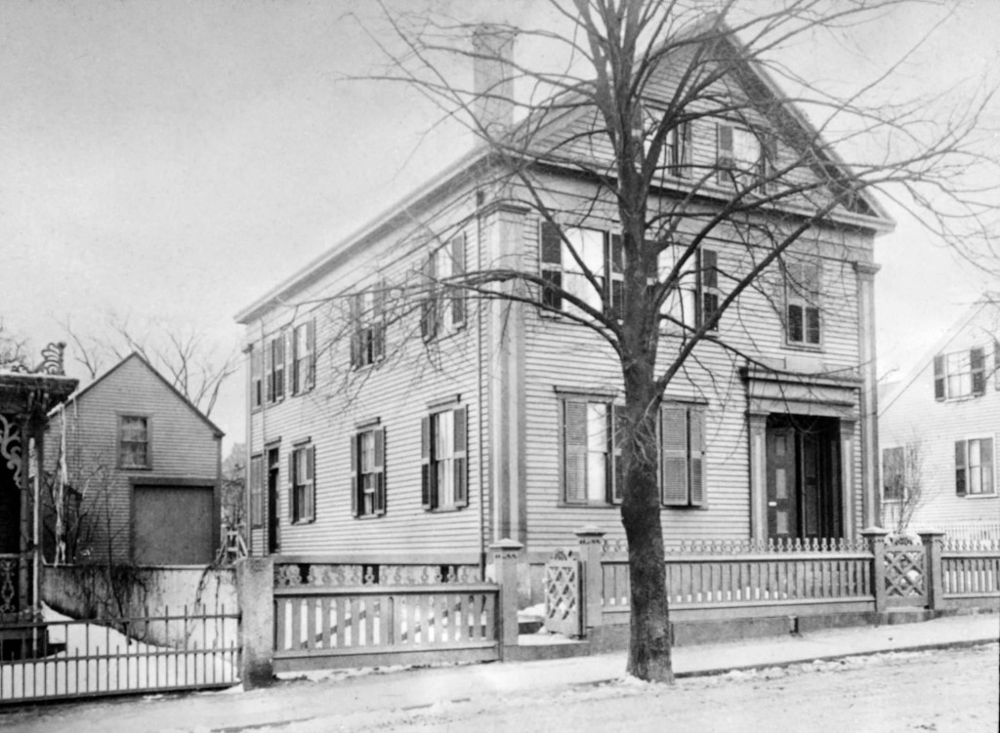
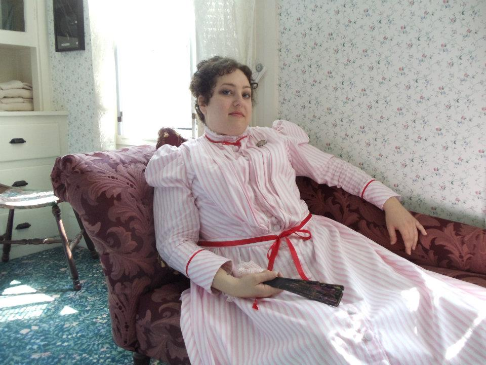
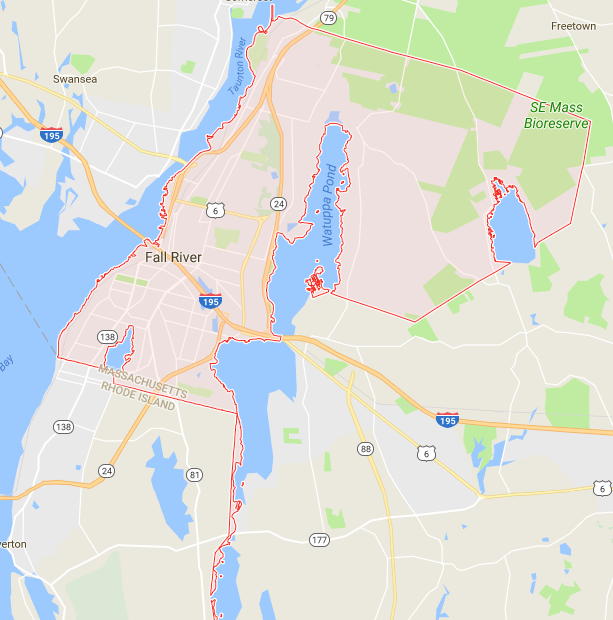

If you need a spooky getaway, come to the Lizzie Borden House to
learn about the ghastly history and the ghosts that haunt it.

Why Should You Choose Here?
The house is a bed and breakfast museum, so you can
spend a haunted night here!
Although it is a historic building, it does feature some
modern amenities such as: free wifi, air conditioning, and
and free breakfast and parking.
There are ghost hunting and house tours so you can learn about
the events of the house as well as its dead occupants!
You can meet "Lizzie" herself when Carol Ann Simone pops up
around the house. You never know when you'll see her...

Reviews
Don't take it from us, take it from the satisfied visitors!
Ann H. says: "Our tour guide, Ryan, gave us a great tour. The
family, the dynamics, the greed presented a perfect plot of "who
done it" in the Borden household. The Victorian home was interesting
as well. A time long ago!"
Jenna G. enjoyed her tour! "Our guide was Jack, he was very
informative not only about the house but the time era as well. The
house was amazing and our group was entertained the entire visit! I
will definitely be back!!
Ellen S. and her husband had a great time! "I have always wanted
to go to Lizzie Borden's house - my husband, not so much. Well, we
went yesterday, and Sue V was our tour guide. What a fantastic tour
we had! Sue was knowledgeable, interesting, and very solicitous of
our group. She answered all our questions patiently, and let us take
our time and look around the rooms. The hour went by so fast! Even
my husband was impressed!

What Else Can You Do There?
If the house is a hike for you and you would like to explore more
while you are in the area, here are some more interesting places
you can visit!